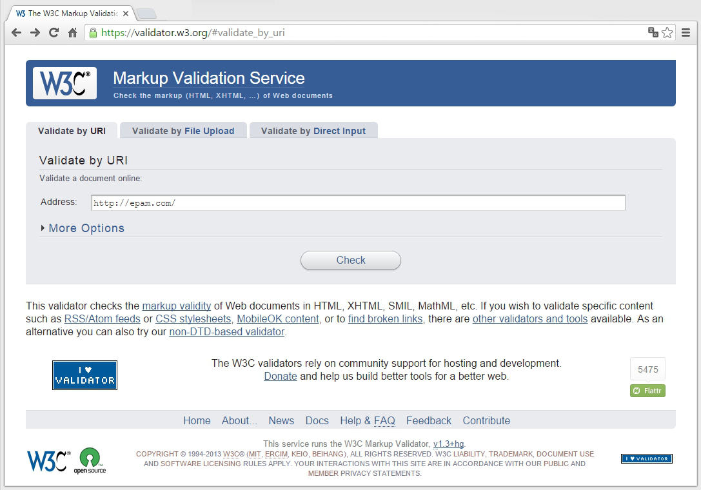
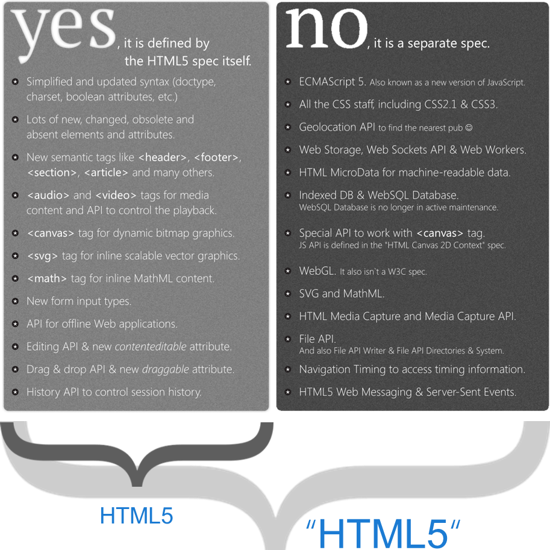
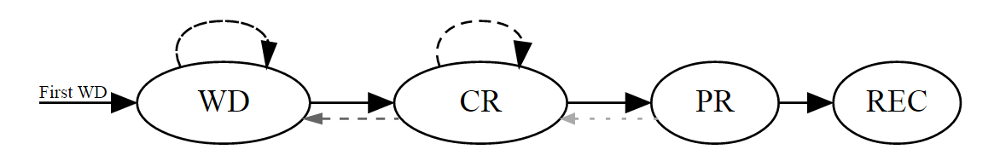

Различия между XHTML и HTML
все элементы должны быть закрыты. Теги, которые не имеют закрывающего тега (например, или ;
имена тегов и атрибутов должны быть записаны строчными буквами (например,
Doctype (document type declaration)
A document type declaration, or DOCTYPE, is an instruction that associates a particular SGML or XML document
(for example, a webpage) with a document type definition (DTD) (for example, the formal definition of a particular version of HTML)
Syntax
<!DOCTYPE [Top level element] [Publicity] "[Registration]//[Organization]//[Type] [Name]//[Lang]" "[URL]">
Top level element — It indicates the top-level element in a document to HTML, this tag <html>.Publicity — PUBLIC or SYSTEMRegistration — Developer DTD registered with the International Organization for Standardization (ISO).
It takes one of two values: plus (+) - a developer registered in the ISO, and - (minus) - the developer is not registered. The W3C value put "-".
Organization — unique name of the organization that developed the DTDType — type describes the document. For HTML / XHTML value specified DTD.Name — unique name to describe the document DTD.URL — address of the document with DTD.
List of Doctype
<!DOCTYPE [Top level element] [Publicity] "[Registration]//[Organization]//[Type] [Name]//[Lang]" "[URL]">
<!DOCTYPE html PUBLIC "-//W3C//DTD HTML 4.01 Strict//EN" "http://www.w3.org/TR/html4/strict.dtd">
<!DOCTYPE html PUBLIC "-//W3C//DTD HTML 4.01 Transitional//EN" "http://www.w3.org/TR/html4/loose.dtd">
<!DOCTYPE html PUBLIC "-//W3C//DTD HTML 4.01 Frameset//EN" "http://www.w3.org/TR/html4/frameset.dtd">
<!DOCTYPE html PUBLIC "-//W3C//DTD HTML 1.0 Strict//EN" "http://www.w3.org/TR/xhtml1/DTD/xhtml1-strict.dtd">
<!DOCTYPE html PUBLIC "-//W3C//DTD XHTML 1.0 Transitional//EN" "http://www.w3.org/TR/xhtml1/DTD/xhtml1-transitional.dtd">
<!DOCTYPE html PUBLIC "-//W3C//DTD XHTML 1.0 Transitional//EN" "http://www.w3.org/TR/xhtml1/DTD/xhtml1-transitional.dtd">
<!DOCTYPE html>
Validation

Валидным (то есть отвечающим всем правилам) XHTML-документом считается документ, удовлетворяющий спецификации.
В идеале, все браузеры должны следовать веб-стандартам и, в соответствии с ними,
валидные документы должны отображаться во всех браузерах на всех платформах.
Валидация XHTML-документа рекомендована даже несмотря на то,
что она не гарантирует кросс-браузерности.
Соответствие документа спецификации может быть проверено на сайте validator.w3.org.
При валидации будут обнаружены ошибки в XHTML-разметке; валидатор разъяснит суть ошибок.
1998
start work onXTML draft version
2000
XTML was
???
XHMTL 2 draft
HMTL 5 draft
2014
HTML5 was
Историю развития языка HTML можно сравнить с детективным рассказом в том, что в ней есть свой неожиданный поворот событий, в результате которых появилась новая версия языка — HTML5.
В 1998 Свои надежды на будущее консорциум W3C возлагал на модернизированного наследника HTML — язык XHTML. Но язык HTML не умер.
Его "подобрала" группа программистов-аутсайдеров и не только возвратила его к жизни, но и заложила основу для новых возможностей, которые мы с вами и исследуем.
Проблемы XHTML 1
Хотя браузеры понимали разметку XHTML, они не обеспечивали строгую проверку отступлений от правил, требуемую этим стандартом.
Это означает, что страница может быть создана с нарушением правил XHTML, но браузеры и глазом не моргнут при ее обработке.
XHTML 2
Эта проблема должна была, по идее, быть решенной в следующей версии — XHTML 2. В ней нужно было ужесточить правила обработки ошибок, которые бы заставляли браузеры не обрабатывать страницы, не отвечающие стандарту XHTML 2. В XHTML 2 также избавились от многих странностей и соглашений, унаследованных от HTML.
Например, система нумерации заголовков (<h1>, <h2>, <h3> и т. д.) была заменена одним элементом <h> с уровнем обозначаемого им заголовка, зависящего от местонахождения этого элемента в веб-странице. Подобным образом элемент <a> был заменен возможностью, позволяющей веб-разработчикам преобразовывать любой элемент в ссылку, а вместо атрибута alt элемента <img> был предложен новый способ предоставления альтернативного содержимого.
Изменения такого рода были типичными для XHTML 2. С теоретической точки зрения, они делали язык более аккуратным и были более понятными. Но с практической стороны, они вынуждали всех изменить свой подход к созданию веб-страниц (не говоря об обновлении уже созданных веб-страниц), не добавляя при этом никакой новой функциональности, чтобы оправдать всю эту работу. Попутно из XHTML 2 было удалено несколько удобных элементов, которые все еще пользовались популярностью среди веб-разработчиков, таких как <b> (полужирный текст), <i> (текст курсивом) и <iframe> (для вложения одной веб-страницы в другую).
Но, возможно, худшей проблемой оказалась чрезвычайно медленная скорость внесения изменений. Разработка XHTML 2 тащилась в течение пяти лет, и интерес разработчиков к этому стандарту медленно угасал.
обратная совместимость
HTML 5
Приблизительно в то же самое время (начиная с 2004 г.) группа разработчиков начала рассматривать будущее Всемирной паутины в другом ракурсе. Вместо того чтобы попытаться разобраться, что было неправильным (или просто "грязным" с философической точки зрения) в HTML, они сфокусировались на том, чего в нем не хватало, что хотели бы иметь веб-разработчики для воплощения своих идей.
В конце концов, HTML зародился как инструмент для отображения документов. С добавлением языка сценариев JavaScript, HTML преобразовался в систему для разработки веб-приложений, таких как поисковые движки, онлайновые магазины, картографические инструменты, средства чтения электронной почты и многие другие. Но в то время как искусное веб-приложение может делать много чего впечатляющего, создать такое приложение — задача не из легких. Большинство разработчиков использует для этого мешанину кода JavaScript, один или несколько популярных инструментариев JavaScript, а также веб-приложение, исполняемое на веб-сервере. Добиться правильного и единообразного взаимодействия всех этих составляющих на разных браузерах — сложная задача.
Такая ситуация вызывала особенную озабоченность среди разработчиков браузеров, поэтому группа дальновидных разработчиков из компании Opera Software (создатели браузера Opera) и компании Mozilla Foundation (создатели браузера Firefox) начали агитировать за включение в XHTML больше возможностей, ориентированных на разработчиков. Когда их попытки не увенчались успехом, компании Opera, Mozilla и Apple создали группу WHATWG (Web Hypertext Appliccation Technology Working Group - рабочая группа по технологии гипертекстовых веб-приложений) с целью работы над новыми решениями.
Группа не ставила перед собой задачу заменить HTML, ее целью было плавное расширение языка, и причем такое, чтобы расширения были обратно совместимыми. Надо сказать, что самая ранняя версия работы этой группы включала две спецификации расширений — Web Applications 1.0 и Web Forms 2.0. В конечном итоге эти стандарты эволюционировали в HTML5.
Предполагается, что число 5 в названии HTML5 означает: данный стандарт является продолжением стандарта HTML (последней версией стандарта HTML перед XHTML была версия 4.01). Это, конечно же, не совсем верно, т. к. HTML5 поддерживает все разработки, существовавшие в области создания веб-страниц в течение десяти лет после выпуска HTML 4.01, включая строгий синтаксис в стиле XHTML (если разработчики желают использовать его), а также множество инноваций для JavaScript. Тем не менее это название делает ясным следующее: язык HTML5 может поддерживать соглашения XHTML, но требует следования правилам HTML.
В 2000-х все интересное происходило в лагере группы WHATWG. После некоторого периода болезненных размышлений организация W3C решила распустить работающую над XHTML 2 группу и работать вместо этого над формализацией стандарта HTML5. На этом этапе первоначальный стандарт HTML5 был разделен на более управляемые части, и многие из его функциональных возможностей стали отдельными стандартами.
Что входит
Сообществом WHATWG (англ. Web Hypertext Application Technology Working Group), начиная с 2004 года[9], разрабатывается спецификация Web Applications 1.0, часто неофициально называемая «HTML 5», которая расширяет HTML (впрочем, имея и совместимый с XHTML 1.0 XML-синтаксис) для лучшего представления семантики различных типичных страниц, например форумов, сайтов аукционов, поисковых систем, онлайн-магазинов и т. д., которые не очень удачно вписываются в модель XHTML 2.0.
the cornerstone
for modern Web applications
18 января 2011 года W3C ввёл логотип, чтобы представить использование или добавить интерес к HTML5.
В отличие от других знаков, выпущенных ранее компанией W3C, он не подразумевает соответствие определённому стандарту.
С 1 апреля 2011 года этот логотип считается официальным.
Во время первого показа его публике, W3C объявил логотип HTML5 как символ «универсальной визуальной идентификации данных для широкого набора открытых Веб-технологий,
включая HTML, CSS, SVG, WOFF и другие».
Некоторые защитники веб-стандартов, включая и The Web Standards Project, раскритиковали это определение HTML5 как обобщённое и размытое понятие.
Тремя днями позже W3C ответил на отзыв сообщества и изменил определение логотипа, убрав перечисление связанных технологий.
Затем W3C заявил, что логотип «представляет HTML5, краеугольный камень для современных Веб приложений
Semantics
Multimedia
Graphics
Web Forms
JavaScript APIs
Принципиально, ключевые изменения можно разделить на 5 блоков:
Семантика.
В HTML5 появился ряд новых семантических тегов, позволяющих более осмысленно организовывать внутреннюю структуру веб-страниц.
Это включает как блочные теги вроде header, footer, article,
так и теги для разметки текста, например, mark, ruby, details.
Ряд существующих тегов HTML4 признан устаревшим, отдельные теги поменяли свое значение, определенные изменения претерпели атрибуты.
Мультимедиа.
HTML5 добавляет нативную поддержку мультимедийного контента (аудио и видео) прямо в HMTL-разметке — с соответствующим API
для управления воспроизведением (и некоторыми заморочками с кодеками).
Графика.
Работать с графикой на стороне клиента стало заметно проще.
В HTML5 добавлен элемент canvas и специальный API на JavaScript для работы с ним.
Canvas представляет собой динамическую «поверхность», поверх которой можно программного рисовать.
Также в HTML5 официально включен тег svg, позволяющий внедрять векторную графику,
описываемую соответствующим веб-стандартом (SVG, Scalable Vector Graphics).
Веб-формы.
Новые элементы веб-формы: как типы, так и атрибуты,
позволяющие расширить возможности традиционных форм встроенными средствами без использования
дополнительных библиотек — от подсказок в поле ввода (placeholder)
и проверки вводимых значений до специальных элементов для ввода дат и цвета.
JavaScript APIs.
Как обозначенные выше API для работы с графикой и мульмедиа,
так новые возможности по перемещению объектов (Drag & Drop) и работе с историей переходов (History API),
а также ряд мелочей, вроде возможности сделать контент редактируемым прямо в текущем месте с помощью Content Editable атрибутов.
umbrella term
HTML5 Extended or HTML5+

section Represents a generic document or application section
article Represents an independent piece of content of a document, such as a blog entry or newspaper article
aside Represents a piece of content that is only slightly related to the rest of the page
header Represents a group of introductory or navigational aids
footer Represents a footer for a section and can contain information about the author, copyright information, etc
nav Represents a section of the document intended for navigation
figure Represents a piece of self-contained flow content, typically referenced as a single unit from the main flow of the document
canvas This is used for rendering dynamic bitmap graphics on the fly, such as graphs or games
audio / video Defines an audio / video file
embed Defines external interactive content or plugin
meter Represents a measurement, such as disk usage
time Represents a date and/or time
command Represents a command the user can invoke
details Represents additional information or controls which the user can obtain on demand
progress Represents a completion of a task, such as downloading or when performing a series of expensive operations
New types for <input> tag
date Selector for calendar date
color Color selector, which could be represented by a wheel or swatch picker
email Input type should be an email
number A field containing a numeric value only
range Numeric selector within a range of values, typically visualized as a slider
search Term to supply to a search engine. For example, the search bar atop a browser
tel Input type should be telephone number
time Time indicator and selector, with no time zone information
url Input type should be URL type
Compare semantic HTML4 and HTML5
<div id="header">
<h1>Header of Site</h1>
</div>
<div id="sidebar">
<h2>Menu</h2>
<ul>
<li><a href="#">Menu item #1</a></li>
<li><a href="#">Menu item #2</a></li>
</ul>
</div>
<div class="post">
<h2>Post #1</h2>
<p>description of first post.</p>
</div>
<div class="post">
<h2>Post #2</h2>
<p>description of second post.</p>
</div>
<div id="footer">
<p>Bottom of Page</p>
</div><header>
<h1>Header of Page</h1>
</header>
<nav>
<h2>Menu</h2>
<ul>
<li><a href="#">Menu item #1</a></li>
<li><a href="#">Menu item #2</a></li>
</ul>
</nav>
<article>
<h2>Post #1</h2>
<p>description of first post.</p>
</article>
<article>
<h2>Post #2</h2>
<p>description of second post.</p>
</article>
<footer>
<p>Bottom of Page</p>
</footer>
W3C Technical Report Development Process
Publication of the First Public Working Draft,
Publication of zero or more revised Public Working Drafts.
Publication of a Candidate Recommendation.
Publication of a Proposed Recommendation.
Publication as a W3C Recommendation.
Possibly, Publication as an Edited Recommendation

Standards
Session history management, Offline web applications, Drag and Drop, Text API for Canvas, WebGL - 3D Canvas graphics
Web Notifications REC 22.10.15
This API used for displaying simple notifications to the user.
HTML5 Web Messaging REC 18.05.15
This specification defines mechanisms for communicating between browsing contexts in HTML document.
Messages in server-sent events, Web sockets, cross-document messaging, channel messaging, and broadcast channels use the MessageEvent interface
Server-Sent Events REC 02.03.15
This specification defines an API for opening an HTTP connection for receiving push notifications from a server in the form of DOM events.
Geolocation API REC 24.10.13
This API is used to provide web applications with scripted access to geographical location information of the hosting device.
Vibration API, Pointer Events, Progress Events, Metadata API, Page Visibility, Widget Interface
Recommendations
Web storage (Second Edition) PR 26.11.2015
This specification defines an API for persistent data storage of key-value pair data in Web clients.
Media Source Extensions CR 12.11.2015
This specification extends the HTMLMediaElement interface to allow JavaScript to generate media streams for playback.
WebSocket API CR 20.09.2012
This specification defines an API that enables Web pages to use the Web Sockets protocol for two-way communication with a remote host.
Media Capture API CR 09.09.2014
This document defines a set of APIs that allow access to the audio, image and video capture capabilities of the device.
Web Cryptography API, Battery Status API, DeviceOrientation Event
Draft
File API The File APIs are used by the browser to provide secure access to the file system.
HTML Microdata This API is used to annotate content with specific machine-readable labels, e.g. to allow generic scripts to provide services that are customized to a page.
Microdata allows nested groups of name-value pairs to be added to documents.
Geolocation API Specification Level 2 This specification adds the ability to retrieve a civic address, rather than coordinates, to the Geolocation API.
Web workers Allows delegation of JavaScript evaluation to background threads, allowing these activities to prevent slowing down interactive events.
Clipboard API This document describes apis for clipboard operations such as copy/cut and paste, or drag and drop in web applications.
HTML5.1
W3C Working Draft 08 October 2015
HTML 5.1 is expected to be finalized in 2016
What's new?
table sorting
details and summary element
dialog element
picture element and srcset attribute
menu, menuitem, contextmenu elements
seamless iframes
scoped style
datetime, datetime-local, week, month input types
inert attribute
:dir() pseudoclass
fullScreen() method
HTMLFormElement.reportValidity() method
new Canvas methods
Forms
Automatic writing in input-forms with capital letters
Localization of controls
(Web developers often have a lack of ability to localize the controls, such as: the button «Browse» to fields <input type=’file’ />, controls for setting the date/time)
Multimedia
Audio balance
Adjusting audio balance (right / left channel) with HTML5 for stereo tracks.
Improving video playback
fast / slow motion / fast forwarding and previous / next frame
Text editing
Element <editоr>
This element allows to save the typed text.
<textarea type=”wysiwyg”>
The main objective: WYSIWYG-editor for structured (semantic) text. Intended use: blogs, emails, editing articles of CMS sites, and so on. Estimated list of supported elements:
important thing is not to remember, but to be able to find the information